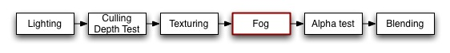

Previous
Previous
Fogging blends the color of the generated pixels down towards a constant color based on distance from camera.

Fogging does not modify a blended pixel's alpha value, only it's RGB components.
Syntax
Fog {
Mode }
FogUnity Manual > Advanced > Shaders > Shader > SubShaders > Pass > Fog |
    |